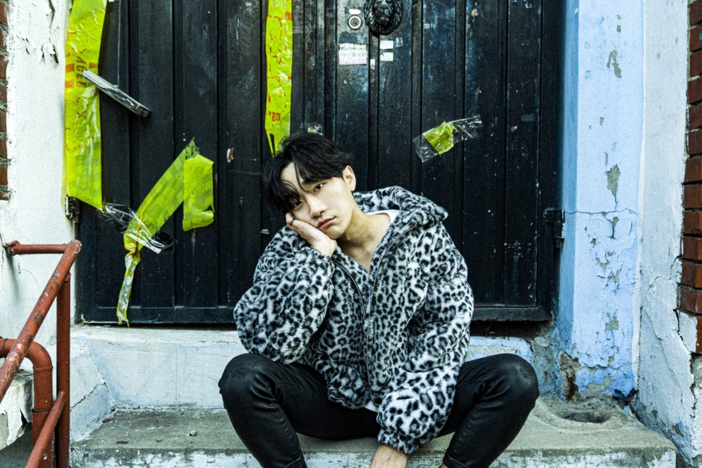

ZIMIN(지민)은 10년 동안 보컬 트레이닝과 밴드 메인 보컬 활동을 거쳐 2025년 솔로로 데뷔한 싱어송라이터입니다. 작사·작곡·편곡과 프로듀싱까지 직접 하며 디지털 싱글 'PROJECT', 'PARADIME', 'Memorize'를 냈습니다. 버스킹부터 축제와 공연장, 해외 행사까지 250회 넘는 무대에서 관객과의 거리를 빠르게 읽고 무대 분위기를 맞춥니다.

주요 무대
- 2026 모스크바 'K-Food Fair in Moscow' 초청 공연
- 2026 '청렴·공감 콘서트' 초청 공연
- 2026 '성북 북적북적 청년상생마켓' 초청 공연
- 2026 용인서부경찰서 녹색어머니회 발대식 초청 공연
- 미군부대 미국독립기념일 페스티벌 게스트 공연
- 의정부 예술의전당 공연
- 홍대 '라이브클럽데이' 오프닝 공연
- 대구 MBC '음악공장' 출연
- 대전 서구힐링페스티벌 공연
- 구미 금오공과대학교 초청 공연
이런 자리에 잘 맞아요
- 축제·지역 행사 초청 공연
- 기관·기업 행사 축하공연
- 대학 축제·청년 행사
공연 구성
- 자작곡과 커버곡으로 셋리스트 구성
- 팝 록·모던 록·발라드 중 행사 분위기에 맞춘 곡 선정
- 행사 시간에 맞춘 공연 길이 협의
섭외 진행 순서
- 문의: 날짜·장소·공연 시간 확인
- 일정 확인과 견적
- 계약: 주식회사 위메이커 명의
- 셋리스트와 음향 사전 협의
- 행사 당일 리허설과 공연
자주 묻는 질문
섭외 비용은 어떻게 정해지나요?
행사 날짜와 장소, 공연 시간, 편성에 따라 달라집니다. 날짜와 장소를 알려 주시면 일정을 확인해 견적을 보내 드립니다.
음향 장비도 준비해 주나요?
필요하면 메이커팀이 무대와 음향까지 함께 준비합니다. 행사장 음향을 쓰는 경우에는 공연 전에 장비 사양을 확인합니다.
원하는 곡을 넣을 수 있나요?
행사 성격에 맞춰 셋리스트를 제안하고, 원하시는 곡이 있으면 미리 협의해 반영합니다.